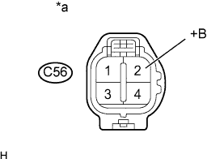

DTC P0031 Слабый ток в цепи управления подогревателем кислородного датчика (A/F) (датчик 1 ряда 1) |
DTC P0032 Сильный ток в цепи управления подогревателем кислородного датчика (A/F) (датчик 1 ряда 1) |
DTC P101D Характеристики цепи подогревателя датчика A/F (заедание во включенном положении датчика 1 ряда 1) |
| № DTC | Условие обнаружения DTC | Неисправный участок |
| P0031 | Ток подогревателя ниже заданного уровня, когда подогреватель работает (логика диагностирования за 1 поездку). |
|
| P0032 | Сбой тока подогревателя датчика состава топливовоздушной смеси (логика диагностирования за 1 поездку). |
|
| P101D | Ток подогревателя выше заданного уровня, когда подогреватель не работает (логика диагностирования за 1 поездку). | ECM |
| 1.ПРОВЕРЬТЕ ДАТЧИК СОСТАВА ТОПЛИВОВОЗДУШНОЙ СМЕСИ (СОПРОТИВЛЕНИЕ ПОДОГРЕВАТЕЛЯ) |
Проверьте датчик состава топливовоздушной смеси (Нажмите здесь).
|
| ||||
| OK | |
| 2.ПРОВЕРЬТЕ НАПРЯЖЕНИЕ НА КОНТАКТЕ (ПИТАНИЕ) |
|  |
Отсоедините разъем датчика состава топливовоздушной смеси.
Установите замок зажигания в положение ON (ВКЛ).
Измерьте напряжение в соответствии со значениями, приведенными в таблице.
| Контакты для подключения диагностического прибора | Положение переключателя | Заданные условия |
| C56-2 (+B) - масса | Зажигание включено | 11-14 В |
| *a | Вид спереди разъема со стороны жгута проводов: (к датчику состава топливовоздушной смеси) |
Подсоедините разъем датчика состава топливовоздушной смеси.
|
| ||||
| OK | |
| 3.ПРОВЕРЬТЕ ЖГУТ ПРОВОДОВ И РАЗЪЕМ (ДАТЧИК СОСТАВА ТОПЛИВОВОЗДУШНОЙ СМЕСИ – ECM) |
Отсоедините разъем датчика состава топливовоздушной смеси.
Отсоедините разъем ЭБУ.
Измерьте сопротивление в соответствии со значениями, приведенными в таблице ниже.
| Подключение диагностического прибора | Условие | Заданные условия |
| C56-1 (HA1A) - C63-6 (HA1A) | Всегда | Менее 1 Ом |
| Подключение диагностического прибора | Условие | Заданные условия |
| C56-1 (HA1A) или C63-6 (HA1A) - масса | Всегда | 10 кОм или более |
Подсоедините разъем датчика состава топливовоздушной смеси.
Подсоедините разъем ECM.
|
| ||||
| OK | |
| 4.ПРОВЕРЬТЕ, ВОЗОБНОВЛЯЕТСЯ ЛИ ВЫВОД DTC (DTC P0031, P0032 ИЛИ P101D) |
Подсоедините портативный диагностический прибор к DLC3.
Установите замок зажигания в положение ON (ВКЛ).
Включите портативный диагностический прибор.
Удалите коды DTC (Нажмите здесь).
Запустите двигатель.
Дайте двигателю поработать на холостом ходу не менее 1 минуты.
Войдите в следующие меню: Powertrain / Engine and ECT / Trouble Codes.
Удалите коды DTC.
| Результат | Следующий шаг |
| DTC не выводится | А |
| DTC P0031, P0032 или P101D выводится | B |
|
| ||||
| А | ||
| ||
| 5.ПРОВЕРЬТЕ ИНТЕГРИРОВАННОЕ РЕЛЕ (A/F) |
Проверьте интегрированное реле (A/F) (Нажмите здесь).
|
| ||||
| OK | |
| 6.ПРОВЕРЬТЕ ЖГУТ ПРОВОДОВ И РАЗЪЕМ (ДАТЧИК СОСТАВА ТОПЛИВОВОЗДУШНОЙ СМЕСИ – ИНТЕГРИРОВАННОЕ РЕЛЕ [A/F]) |
Отсоедините разъем датчика состава топливовоздушной смеси.
Извлеките интегрированное реле (A/F) из блока реле моторного отсека.
Измерьте сопротивление в соответствии со значениями, приведенными в таблице ниже.
| Подключение диагностического прибора | Условие | Заданные условия |
| C56-2 (+B) - 1B-8 | Всегда | Менее 1 Ом |
| Подключение диагностического прибора | Условие | Заданные условия |
| C56-2 (+B) или 1B-8 - масса | Всегда | 10 кОм или более |
Подсоедините разъем датчика состава топливовоздушной смеси.
Установите интегрированное реле на место.
|
| ||||
| OK | ||
| ||